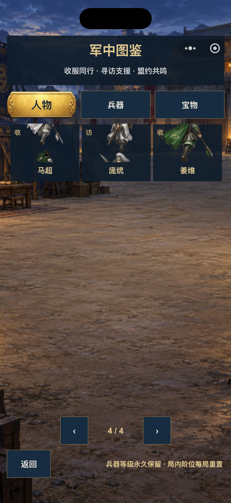
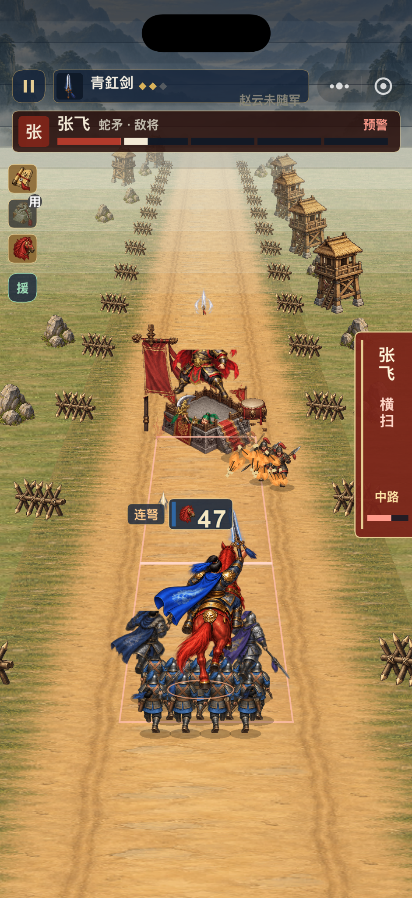
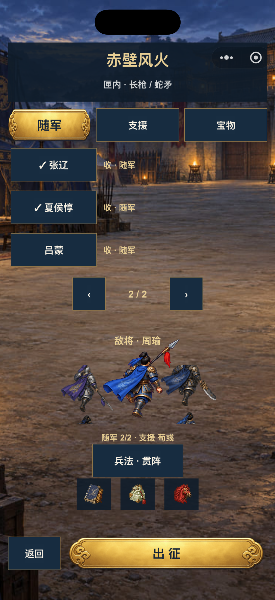

S01 · 军中图鉴，第4/4页
马超、庞统、姜维卡片中出现截断主体与其他身体碎片；卡片需检查头像来源、帧映射、裁片和显示容器。图鉴底部仍显示兵器说明，须按页签使用相应说明。

来自用户2026-09-27反馈。这里展示的是待修问题，不是优化效果稿。点击图片查看原尺寸。动态速度与卡顿以用户实测陈述为依据。
马超、庞统、姜维卡片中出现截断主体与其他身体碎片；卡片需检查头像来源、帧映射、裁片和显示容器。图鉴底部仍显示兵器说明，须按页签使用相应说明。

检查敌将与将台的前后关系、己方坐骑与两名随军的遮挡、上方共鸣文字对比。截图无法单独证明行进速度或帧率。

敌将主体与台前零散人物部位需要逐层还原；右侧预警侵入画面边缘。检查完整身体与预警有效区域。

交锋主体、箭雨与将台叠合；检查受击反馈、手握兵器和特效可读性。命中节奏、卡顿属于用户实测反馈，静图不提供时长证据。

两侧展示角色存在水平截断与离散部件；下方阵容预览必须完整。列表跨页，不能仅凭本页勾选数判断总随军数错误。

用于与S05对照切换后帧、角色、占位和节点回收。明确两槽实际人名，检查旧节点残留、错用其他角色或动作帧。

路线叠在营地背景上；未开区域用一排深色圆遮挡，地图空间感与区域识别不足。保留当前关卡、奖励和解锁数据，修复地图呈现。